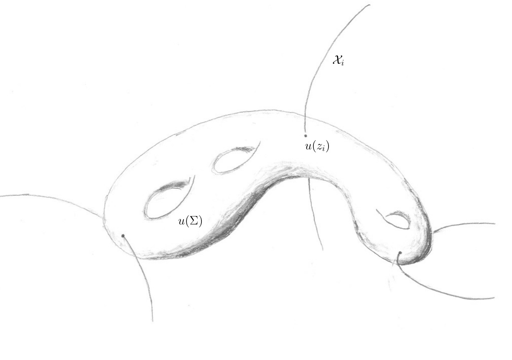

Mathematics research
%%%%%%%%%%%%%%%%%%%%%%%%%%%%%%%%%%%%%%%%%%%%%%%%%% % Standard Commands %%%%%%%%%%%%%%%%%%%%%%%%%%%%%% %%%%%%%%%%%%%%%%%%%%%%%%%%%%%%%%%%%%%%%%%%%%%%%%%%
%mathbb
%greek
%GREEK
%cal
%tilde
%bar %
%%%%%%%%%%%%%%%%%%%%%%%%%%%%%%%%%%%%%%%%%%%%%%%%%% % Math Commands %%%%%%%%%%%%%%%%%%%%%%%%%%%%%%%%%% %%%%%%%%%%%%%%%%%%%%%%%%%%%%%%%%%%%%%%%%%%%%%%%%%%
%compactified moduli space
% % % % %SYMPLECTIC GEOMETRY % % % % %
% % % % %Hat Delbar % % % % %
% % % % %COLORS % % % % %% % % % %GROMOV-WITTEN LANGUAGE % % % % %
% % % % %THOM LANGUAGE % % % % %
% % % % %POLYFOLD LANGUAGE % % % % %
Notes to self
This documents my mathematical accomplishments over the last decade. Explain it as such! Everything in my mathematical life revolved around a proof of the Gromov–Witten axioms.
Orbifolds and the Steenrod problem
The Steenrod problem was first presented in (Eilenberg 1949) and asked the following question:
Can any homology class of a finite polyhedron be represented as an image of the fundamental class of some manifold?
In (Thom 1954) Thom conclusively answered this problem, completely solving it for closed orientable manifolds.
Theorem (Thom 1954, Thm II.1) The rational homology groups of a closed orientable manifold have a basis consisting of classes represented by closed embedded submanifolds.
For solving this problem, and for his related work inventing cobordism theory, Thom was awarded the Fields medal in 1958. Aided by the modern language of ep-groupoids, I was able to follow the same approach as Thom and obtain the following analogue for orbifolds.
Theorem (Schmaltz 2019a, The Steenrod problem for orbifolds) The rational homology groups of a closed orientable orbifold have a basis consisting of classes represented by “closed embedded full suborbifolds whose normal bundles have fiberwise trivial isotropy action”.
In other words, given a closed orientable orbifold \(\mathcal{O}\) there exists a basis \(\{[\mathcal{X}_i]\}\) of the rational homology groups \(H_*(\mathcal{O};\mathbb{Q})\) which consists of the fundamental classes of such “closed embedded full suborbifolds \(\mathcal{X}_i\subset \mathcal{O}\) whose normal bundles have fiberwise trivial isotropy action”. Such a suborbifold is called a representing suborbifold.
Representing suborbifolds are well-suited for general intersection theories. Given such a suborbifold, the underlying topological space of the normal bundle is a vector bundle over the underlying topological space of the suborbifold. In contrast, the underlying topological space of an arbitrary orbifold bundle will generally not be a vector bundle. This means it is possible to use single valued sections (as opposed to multisections) for arguments involving perturbations.
Polyfold Gromov–Witten invariants as intersection numbers
The earliest interpretations of the GW-invariants present in the literature were given in terms of counting a finite number of curves (McDuff and Salamon 2012; Ruan 1994, 1996). For example, Ruan described the GW-invariants as a finite sum, counted with multiplicity, of nonmultiple cover \(J\)-spheres in \({\mathcal M}^*_{(A,J)}\) which intersect representatives of given cycles in the symplectic manifold (Ruan 1996, Thm. A).
However, such definitions have previously been restricted to genus zero GW-invariants in semipositive symplectic manifolds. Observe that in the genus \(0\) case the Grothendieck–Knudsen spaces \(\smash{\bar{\mathcal{M}}}\vphantom{\mathcal{M}}^{\text{log}}_{0,k}\) are finite-dimensional manifolds. In contrast, if genus \(g >0\) the general Deligne–Mumford spaces \(\smash{\bar{\mathcal{M}}}\vphantom{\mathcal{M}}^{\text{log}}_{g,k}\) are orbifolds. Therefore, in the genus \(0\) case extant methods—such as representing a homology class as a pseudocycle in a manifold or, indeed, the Steenrod problem for manifolds—were sufficient to interpret the GW-invariants as an intersection number.
Using the Steenrod problem for orbifolds, I was able to prove that the polyfold GW-invariants may equivalently be defined as an intersection number. Let \({\mathcal S}_{A,g,k}(p)\) be a perturbed GW-moduli space, and let \({\mathcal X}_1\times \cdots \times {\mathcal X}_k \times {\mathcal B}\subset Q^k\times \smash{\bar{\mathcal{M}}}\vphantom{\mathcal{M}}^{\text{log}}_{g,k}\) be a representing suborbifold. Consider the diagram:
\[ \begin{align*} {\mathcal S}_{A,g,k}(p) \xrightarrow{ev_1\times \cdots \times ev_k \times \pi} M^k & \times \smash{\bar{\mathcal{M}}}\vphantom{\mathcal{M}}^{\text{log}}_{g,k} \\ & \cup \\ {\mathcal X}_1\times \cdots &\times {\mathcal X}_k \times {\mathcal B}. \end{align*} \]
I showed that transversality of a perturbed solution space of a polyfold with a representing submanifolds/suborbifolds may always be achieved through either of the following:
- Through the perturbation of the representing suborbifold; due to the properties of the normal bundle representing suborbifolds may always be perturbed (Schmaltz 2019a, Prop. 3.9).
- Assuming the map defined on the ambient polyfold is a submersion, we may obtain transversality through choice of a suitable abstract perturbation (Schmaltz 2019a, Prop. 3.10).
When \(\dim {\mathcal S}_{A,g,k}(p) + \dim \left({\mathcal X}_1 \times\cdots\times {\mathcal X}_k \times {\mathcal B}\right) = \dim (M^k \times \smash{\bar{\mathcal{M}}}\vphantom{\mathcal{M}}^{\text{log}}_{g,k})\) the intersection number is given by the signed weighted count of a finite number of points of intersection.
Theorem (Schmaltz 2019a, Polyfold Gromov–Witten invariants as intersection numbers) The polyfold Gromov–Witten invariant may equivalently be defined as the intersection number evaluated on a basis of representing submanifolds \({\mathcal X}\subset M\) and representing suborbifolds \({\mathcal B}\subset {\mathcal O}\):
\[ \mathop{\mathrm{GW}}_{A,g,k} ([{\mathcal X}_1],\ldots,[{\mathcal X}_k];[{\mathcal B}]) := \left(ev_1\times\cdots\times ev_k\times\pi\right)|_{{\mathcal S}_{A,g,k}(p)} \cdot \left({\mathcal X}_1 \times\cdots\times {\mathcal X}_k \times {\mathcal B}\right). \]
The invariant does not depend on the choice of abstract perturbation, nor on the choice of representing basis.
Thus the traditional geometric interpretation of the GW-invariants as a “count of curves” is made literal.

A polyfold proof of the Gromov–Witten axioms
With a fully general polyfold Gromov–Witten invariant in place, a natural question is:
To what extent does this newly defined invariant satisfy traditional results of GW-theory for symplectic manifolds?
A natural place to begin is with verifying the GW-axioms, as first stated by Kontsevich and Manin (1994).
Theorem (Schmaltz 2019c, Polyfold Gromov–Witten axioms) The polyfold Gromov–Witten invariants satisfy the Gromov–Witten axioms.
Theorem. The polyfold Gromov–Witten invariants satisfy the following Gromov–Witten axioms:
Effective axiom. If \(\omega(A)<0\) then \(\mathop{\mathrm{GW}}_{A,g,k} = 0\).
Grading axiom. If \(\mathop{\mathrm{GW}}_{A,g,k} (\alpha_1,\ldots,\alpha_k; \beta) \neq 0\) then
\[ \sum_{i=1}^k (2n - \deg (\alpha_i)) + (6g-6+2k - \deg(\beta)) = 2c_1(A) + (2n - 6)(1-g) + 2k. \]
Homology axiom. There exists a homology class
\[ \sigma_{A,g,k} \in H_{2c_1(A) + (2n-6)(1-g) + 2k} (M^k\times \bar{\mathcal{M}}_{g,k};{\mathbb Q}) \]
such that
\[ \mathop{\mathrm{GW}}_{A,g,k} (\alpha_1,\ldots,\alpha_k; \beta) = \langle p_1^* \mathop{\mathrm{PD}}(\alpha_1) \smallsmile \cdots \smallsmile p_k^*\mathop{\mathrm{PD}}(\alpha_k) \smallsmile p_0^*\mathop{\mathrm{PD}}(\beta), \sigma_{A,g,k} \rangle \]
where \(p_i: M^k \times \bar{\mathcal{M}}_{g,k} \to M\) denotes the projection onto the \(i\)th factor and the map \(p_0:M^k \times \bar{\mathcal{M}}_{g,k}\to\bar{\mathcal{M}}_{g,k}\) denotes the projection onto the last factor.
Zero axiom. If \(A=0,\ g=0\) then \(\mathop{\mathrm{GW}}_{0,0,k} (\alpha_1,\ldots,\alpha_k;\beta) = 0\) whenever \(\deg (\beta) >0\), and
\[ \mathop{\mathrm{GW}}_{0,0,k} (\alpha_1,\ldots,\alpha_k; [\operatorname{pt}]) = \int_M \mathop{\mathrm{PD}}(\alpha_1) \wedge \cdots \wedge \mathop{\mathrm{PD}}(\alpha_k). \]
Symmetry axiom. Fix a permutation \(\sigma: \{1,\ldots, k\}\to \{1,\ldots,k\}\). Consider the permutation map \(\sigma:\smash{\bar{\mathcal{M}}}\vphantom{\mathcal{M}}^{\text{log}}_{g,k}\to \smash{\bar{\mathcal{M}}}\vphantom{\mathcal{M}}^{\text{log}}_{g,k}, \ [\Sigma,j,M,D] \mapsto [\Sigma,j,M^\sigma,D]\) where \(M = \{z_1,\ldots,z_k\}\) and where \(M^\sigma := \{z'_1,\ldots,z'_k\},\) \(z'_i:= z_{\sigma(i)}\). Then
\[ \mathop{\mathrm{GW}}_{A,g,k} (\alpha_{\sigma(1)},\ldots,\alpha_{\sigma(k)}; \sigma_*\beta) = (-1)^{N(\sigma;\alpha_i)} \mathop{\mathrm{GW}}_{A,g,k} (\alpha_1,\ldots,\alpha_k; \beta) \]
where \(N(\sigma;\alpha_i):= \sharp \{ i<j \mid \sigma(i)> \sigma(j), \deg (\alpha_i)\deg(\alpha_j)\in 2{\mathbb Z}+1\}\).
Definition. (Kontsevich and Manin 1994, Eq. 2.3) We say that \((A,g,k)\) is a basic class if it is equal to one of the following: \((A,0,3)\), \((A,1,1)\), or \((A,g\geq 2,0)\).
The point is, for such values of \(g\) and \(k\) we will have \(\bar{\mathcal{M}}_{g,k-1} = \emptyset\) by definition.
Fundamental class axiom. Consider the fundamental classes \([M]\in H_{2n}(M;{\mathbb Q})\) and \([\smash{\bar{\mathcal{M}}}\vphantom{\mathcal{M}}^{\text{log}}_{g,k}] \in H_{6g-6+2k}(\smash{\bar{\mathcal{M}}}\vphantom{\mathcal{M}}^{\text{log}}_{g,k};{\mathbb Q})\). Suppose that \(A\neq 0\) and that \((A,g,k)\) is not basic. Then
\[ \mathop{\mathrm{GW}}_{A,g,k} (\alpha_1,\ldots,\alpha_{k-1},[M]; [\smash{\bar{\mathcal{M}}}\vphantom{\mathcal{M}}^{\text{log}}_{g,k}]) = 0. \]
Consider the canonical section \(s_i :\smash{\bar{\mathcal{M}}}\vphantom{\mathcal{M}}^{\text{log}}_{g,k-1} \to \smash{\bar{\mathcal{M}}}\vphantom{\mathcal{M}}^{\text{log}}_{g,k}\) defined by doubling the \(i\)th-marked point. Then
\[ \mathop{\mathrm{GW}}_{A,g,k} (\alpha_1,\ldots,\alpha_{k-1},[M]; s_{i*}\beta) = \mathop{\mathrm{GW}}_{A,g,k-1} (\alpha_1,\ldots,\alpha_{k-1};\beta). \]
Divisor axiom. Suppose \((A,g,k)\) is not basic. If \(\deg (\alpha_k) = 2n-2\) then
\[ \mathop{\mathrm{GW}}_{A,g,k} (\alpha_1,\ldots,\alpha_k; \mathop{\mathrm{PD}}(ft_k^* \mathop{\mathrm{PD}}(\beta))) = (A\cdot \alpha_k ) \ \mathop{\mathrm{GW}}_{A,g,k-1} (\alpha_1,\ldots,\alpha_{k-1};\beta), \]
where \(A\cdot \alpha_k\) is given by the homological intersection product.
Let \(\{e_\nu \} \in H^*(M;{\mathbb Q})\) be a homogeneous basis and let \(\{e^\mu \} \in H^*(M;{\mathbb Q})\) be the dual basis with respect to Poincaré duality, i.e., \(\langle e_\nu \smallsmile e^\mu, [M] \rangle = \delta_{\nu \mu}\). It follows from the Künneth formula that \(\{e_\nu \otimes e^\mu \}\) is a basis for \(H^*(M\times M;{\mathbb Q})\). We correct the sign by redefining \(e_\nu\) as \((-1)^{\deg e_\nu} e_\nu\). We can write the Poincaré dual of the diagonal \(\Delta \subset M\times M\) in this basis as \(\mathop{\mathrm{PD}}([\Delta]) = \sum_\nu e_\nu \otimes e^\nu\).
Splitting axiom. Fix a partition \(S_0 \sqcup S_1 =\{1,\ldots, k\}\). Let \(k_0 := \sharp S_0\), \(k_1 := \sharp S_1\) and let \(g_0\), \(g_1 \geq 0\) such that \(g = g_0 + g_1\), and \(k_i + g_i \geq 2\) for \(i=0,1\). Consider the natural map \[\phi_S : \bar{\mathcal{M}}_{k_0+1 , g_0}\times \bar{\mathcal{M}}_{k_1+1 , g_1} \to \bar{\mathcal{M}}_{g,k}\] which identifies the last marked point of a stable noded Riemann surface in \(\bar{\mathcal{M}}_{k_0+1 , g_0}\) with the first marked point of a stable noded Riemann surface in \(\bar{\mathcal{M}}_{k_1+1, g_1}\), and which maps the first \(k_0\) marked points of \(\bar{\mathcal{M}}_{g_0,k_0+1}\) to marked points indexed by \(S_0\) and likewise maps the last \(k_1\) marked points of \(\bar{\mathcal{M}}_{g_1,k_1+1}\) to marked points indexed by \(S_1\). Then
\[ \begin{align*} & \mathop{\mathrm{GW}}_{A,g,k} (\alpha_1, \ldots, \alpha_k; \phi_{S*} (\beta_0\otimes \beta_1) ) = (-1)^{N(S;\alpha)} \sum_{A_0+A_1 = A} \sum_\nu \\ & \qquad \mathop{\mathrm{GW}}_{A_0,g_0,k_0+1} (\{\alpha_i\}_{i\in S_0}, \mathop{\mathrm{PD}}(e_\nu) ; \beta_0) \cdot \mathop{\mathrm{GW}}_{A_1,g_1,k_1+1} (\mathop{\mathrm{PD}}(e^\nu), \{\alpha_j\}_{j\in S_1} ; \beta_1) \end{align*} \]
where \(N(S;\alpha)=\sharp \{j<i \mid i\in S_0, j\in S_1, \deg(\alpha_i)\deg(\alpha_j)\in 2{\mathbb Z}+1 \}\).
Genus reduction axiom. Consider the natural map \[\psi: \bar{\mathcal{M}}_{g-1,k+2} \to \bar{\mathcal{M}}_{g,k}\] which identifies the last two marked points of a stable noded Riemann surface, increasing the arithmetic genus by one. Then
\[ 2 \cdot \mathop{\mathrm{GW}}_{A,g,k} (\alpha_1, \ldots, \alpha_k; \psi_* \beta) = \sum_\nu \mathop{\mathrm{GW}}_{A,g-1,k+2} (\alpha_1,\ldots,\alpha_k, \mathop{\mathrm{PD}}(e_\nu) , \mathop{\mathrm{PD}}(e^\nu) ; \beta). \]
Strategy of the proof of the Gromov–Witten axioms
The Gromov–Witten axioms give relationships between the Gromov–Witten invariants. These relationships are determined by the geometry of certain naturally defined maps defined between the unperturbed Gromov–Witten moduli spaces, namely:
- permutation maps, \[\sigma : \bar{\mathcal{M}}_{A,g,k}(J) \to \bar{\mathcal{M}}_{A,g,k}(J),\]
- \(k\)th-marked point forgetting maps, \[ft_k : \bar{\mathcal{M}}_{A,g,k}(J) \to \bar{\mathcal{M}}_{A,g,k-1}(J),\]
- canonical sections, \[s_i : \bar{\mathcal{M}}_{A,g,k-1}(J) \hookrightarrow \bar{\mathcal{M}}_{A,g,k}(J).\]
Furthermore, using the map
\[ ev_{k_0+1} \times ev_1 : \bar{\mathcal{M}}_{A_0,g_0,k_0+1}(J) \times \bar{\mathcal{M}}_{A_1,g_1,k_1+1}(J) \to M\times M \]
we may consider the subset \((ev_{k_0+1} \times ev_1 )^{-1}(\Delta)\) of the product unperturbed Gromov–Witten moduli space with a constraint imposed by the diagonal \(\Delta \subset M\times M\). We then additionally have:
- inclusion maps, and maps \(\phi\) which identify the marked points \(z_{k_0+1}\) and \(z_1'\), \[ \begin{align*} \bar{\mathcal{M}}_{A_0,g_0,k_0+1}(J) & \times \bar{\mathcal{M}}_{A_1,g_1,k_1+1}(J) \\ i \bigg{\uparrow} & \\ (ev_{k_0+1} & \times ev_1 )^{-1}(\Delta) \xrightarrow{\phi} \bar{\mathcal{M}}_{A_0+A_1,g_0+g_1,k_0+k_1}(J) \end{align*} \] Likewise, using the map \(ev_{k+1} \times ev_{k+2} : \bar{\mathcal{M}}_{A,g-1,k+2}(J) \to M\times M\) we may consider the subset \((ev_{k+1} \times ev_{k+2} )^{-1}(\Delta)\) of the unperturbed Gromov–Witten moduli space with a constraint imposed by the diagonal \(\Delta \subset M\times M\). We then additionally have:
- inclusion maps, and maps \(\psi\) which identify the marked points \(z_{k+1}\) and \(z_{k+2}\) (increasing the arithmetic genus by one), \[ \begin{align*} \bar{\mathcal{M}}_{A,g-1,k+2}& (J) \\ i \bigg{\uparrow} \qquad &\\ (ev_{k+1} \times ev_{k+2}& )^{-1}(\Delta) \xrightarrow{\psi} \bar{\mathcal{M}}_{A,g,k}(J) \end{align*} \]
Intuitively, we should prove the Gromov–Witten axioms by interpreting the Gromov–Witten invariants as a finite count of curves and using the geometry of the above maps to directly compare such counts with respect to constraints imposed by the homology classes on \(M\) and \(\smash{\bar{\mathcal{M}}}\vphantom{\mathcal{M}}^{\text{log}}_{g,k}\).
A substantial amount of work is required to make this intuition rigorous in the context of an abstract perturbation theory. A deep understanding of the full machinery of polyfold theory, in addition to the geometry of the Gromov–Witten invariants is necessary to navigate substantial difficulties that we encounter.
Difficulties in proving the polyfold Gromov–Witten axioms
Proving this required a substantial amount of work, and relied on the results of (Schmaltz 2019b, 2019a). The GW-axioms give relationships between the GW-invariants. These relationships are determined by the geometry of certain naturally defined maps defined between the unperturbed GW-moduli spaces, namely the permutation maps, the \(k\)th-marked point forgetting maps, in addition to certain natural maps which identify marked points into nodal pairs, where the GW-moduli space is subject to a diagonal constraint. With the exception of the \(k\)th-marked point forgetting maps, we may pullback abstract perturbations in order to obtain well-defined restricted maps between perturbed GW-moduli spaces.
The branched integral is useful for giving a well-defined definition of the polyfold GW-invariants and moreover showing that they are, in fact, invariants and do not depend on choices. But integration is not the best viewpoint for giving a proof of all of the axioms. Intuitively, we should prove the GW-axioms by interpreting the GW-invariants as an intersection number and using the geometry of the above maps to directly compare such counts with respect to constraints imposed by the homology classes on \(M\) and \(\smash{\bar{\mathcal{M}}}\vphantom{\mathcal{M}}^{\text{log}}_{g,k}\). And indeed, via (Schmaltz 2019a) this intuition is made rigorous, and is precisely my approach to proving the axioms.
However, problems arise when we try to define a \(k\)th-marked point forgetting map between perturbed GW-moduli spaces—such a map does not even exist. The construction of the smooth structure for the DM-orbifolds as described in (Hofer, Wysocki, and Zehnder 2017) and (Hofer, Wysocki, and Zehnder, n.d.) requires a choice: that of a “gluing profile,” i.e., a smooth diffeomorphism \(\varphi: (0,1]\to [0,\infty).\) Given a noded Riemann surface and a nonzero parameter \(a \in {\mathbb C}\) we use the gluing profile to replace a region of the node with a cylinder of finite length \(\varphi(\lvert a\rvert)\). The logarithmic gluing profile is given by \(\varphi_{\log} (r) = -\frac{1}{2\pi} \log (r)\) and produces the classical holomorphic DM-orbifolds \(\smash{\bar{\mathcal{M}}}\vphantom{\mathcal{M}}^{\text{log}}_{g,k}\). There is also an exponential gluing profile, given by \(\varphi_{\exp} (r) = e^{1/r} - e\) which produces DM-orbifolds \(\smash{\bar{\mathcal{M}}}\vphantom{\mathcal{M}}^{\text{exp}}_{g,k}\) which are only smooth orbifolds. The exponential gluing profile is required for the scale smoothness of certain maps used to define the GW-polyfolds.
This use of nonstandard smooth structure has the following consequence:
Problem 1. In general the map \(ft_k: \smash{\bar{\mathcal{M}}}\vphantom{\mathcal{M}}^{\text{exp}}_{g,k} \to \smash{\bar{\mathcal{M}}}\vphantom{\mathcal{M}}^{\text{exp}}_{g,k-1}\) is continuous but not differentiable.
Independent of the usage of a nonstandard gluing profile, there is no hope whatsoever of defining a \(k\)th-marked point forgetting map on the GW-polyfolds as they are defined:
Problem 2. In general there does not exist a natural map \(ft_k\) on the Gromov–Witten polyfolds.
To explain, a stable curve in \({\mathcal Z}_{A,g,k}\) may contain a “destabilizing ghost component,” i.e., a component \(C_k\simeq S^2\) with precisely \(3\) special points, one of which is the \(k\)th-marked point, and such that \(\int_{C_k} u^*\omega=0,\) \(u|_{C_k} \neq\text{const}.\) After removal of the \(k\)th-marked point from such a component we cannot consider the resulting data as a stable curve in \({\mathcal Z}_{A,g,k-1}\).
We might try to restrict to a subset \({\mathcal Z}^\text{const}_{A,g,k}\subset {\mathcal Z}_{A,g,k}\) consisting of stable curves which are constant on such destabilizing ghost components. The \(k\)th-marked point forgetting map is then well-defined on this subset. However, if we consider \(\mathcal{Z}^\text{const}_{A,g,k}\subset \mathcal{Z}_{A,g,k}\) with the subspace topology, and \(\mathcal{Z}_{A,g,k-1}\) with the usual polyfold topology, then:
Problem 3. In general the well-defined restriction \(ft_k:{\mathcal Z}_{A,g,k}^\text{const} \to \mathcal{Z}_{A,g,k-1}\) is not continuous.
In essence the central problem is that the GW-polyfolds as constructed are not “universal curves”. Our proof of the GW-axioms rectifies this by constructing a universal curve polyfold \({\mathcal Z}^\text{uc}_{A,g,k}\) over \({\mathcal Z}_{A,g,k-1}\), on which we may consider a well-defined \(k\)th-marked point forgetting map
\[ ft_k : {\mathcal Z}^\text{uc}_{A,g,k} \to {\mathcal Z}_{A,g,k-1}. \]
The preimage of stable curve in \({\mathcal Z}_{A,g,k-1}\) via \(ft_k\) can be identified with the underlying Riemann surface with nodes identified, thereby explaining the choice of nomenclature “universal curve”. It is possible to pullback regular perturbations via this map, and hence obtain a well-defined map between perturbed GW-moduli spaces.
There is a final problem. In general, the projection map must factor through the \(k\)th-marked point forgetting map; this is due to the need to forget the added stabilizing points. Thus, in order to obtain a smooth projection map we must map to the logarithmic DM-orbifold. However:
Problem 4. While the projection \(\pi : {\mathcal Z}_{A,g,k} \to \smash{\bar{\mathcal{M}}}\vphantom{\mathcal{M}}^{\text{log}}_{g,k}\) is \(\text{sc}\)-smooth, in general it is not a submersion.
This has important consequences if we wish to consider the GW-invariant as an intersection number; the only way to get transversality of the projection map with a representing suborbifold \({\mathcal B}\subset \smash{\bar{\mathcal{M}}}\vphantom{\mathcal{M}}^{\text{log}}_{g,k}\) is through perturbation of the suborbifold. This is made possible by the existence of representing suborbifolds, for which perturbation is possible, the existence of which is guaranteed by (Schmaltz 2019a).
Pseudocycle Gromov–Witten invariants are a strict subset of polyfold Gromov–Witten invariants
There were of course, earlier attempts at rigourously definining the Gromov–Witten invariants prior to the fully general definition of the polyfold Gromov–Witten invariant. The most common of these is the classical pseudocycle Gromov–Witten invariant, defined only for genus-zero and for semipositive symplectic manifolds.
The “semipositive” condition was first introduced by McDuff in 1991 in (McDuff 1991), and is specifically designed to guarantee that in the genus-zero case, the strata of nodal \(J\)-curves will have codimension at least \(2\) relative to the dimension of the top stratum of non-noded simple \(J\)-curves. For semipositive symplectic manifolds, the space of genus-zero \(J\)-curves has the structure of a pseudocycle. Around the end of 1993, GW-invariants for genus-zero were first rigorously defined for semipositive symplectic manifolds by Ruan–Tian in (Ruan and Tian 1995).
A symplectic manifold \((M^{2n},\omega)\) is called semipositive if, for every \(A\in \pi_2(M)\),
\[ \omega(A) >0,\ c_1(A) \geq 3-n \quad \implies \quad c_1(A) \geq 0. \]
I unified the classical definition of a Gromov–Witten invariant as a pseudocycle and the modern definition of a Gromov–Witten invariant via polyfold theory by proving they are equivalent.
Theorem. (Schmaltz 2023, Main result) For a given semipositive symplectic manifold, the pseudocycle genus-zero Gromov–Witten invariants are equal to the polyfold genus-zero Gromov–Witten invariants.
Since the polyfold GW-invariants are also defined for general symplectic manifolds and for arbitrary genus, we have
\[ \left\{ \begin{array}{c} \textit{pseudocycle} \\ \textit{Gromov-Witten} \\ \textit{invariants} \end{array} \right\} \subsetneq \left\{ \begin{array}{c} \textit{polyfold} \\ \textit{Gromov-Witten} \\ \textit{invariants} \end{array} \right\}. \]